Activities / 活動の歩み
学生寮や同好会でのイベント企画・空間づくりから、
大学主催行事や他大学合同ライブのポスターイラスト制作、そして現在の個人ゲーム開発まで。
イラスト表現とアイデアを掛け合わせ、
「人が集まり、体験して楽しくなる仕掛け」を作ってきた記録です。
本ページに掲載している企画・展示のほか、広島県の他大学合同ライブのポスターや
大学主催イベントのメインビジュアルなど、単体でのイラスト制作も幅広く手掛けています。
描き下ろしたポスターやイラスト作品は Worksページ にて公開しています。
寮のイベント運営はRAメンバー3人で協力して行いました。
私は主にイベントの企画立案と告知ポスターのイラスト制作を担当し、事務作業や本部への報告、寮内での実際の告知・運営サポートなどは頼もしい仲間2人が担ってくれました。
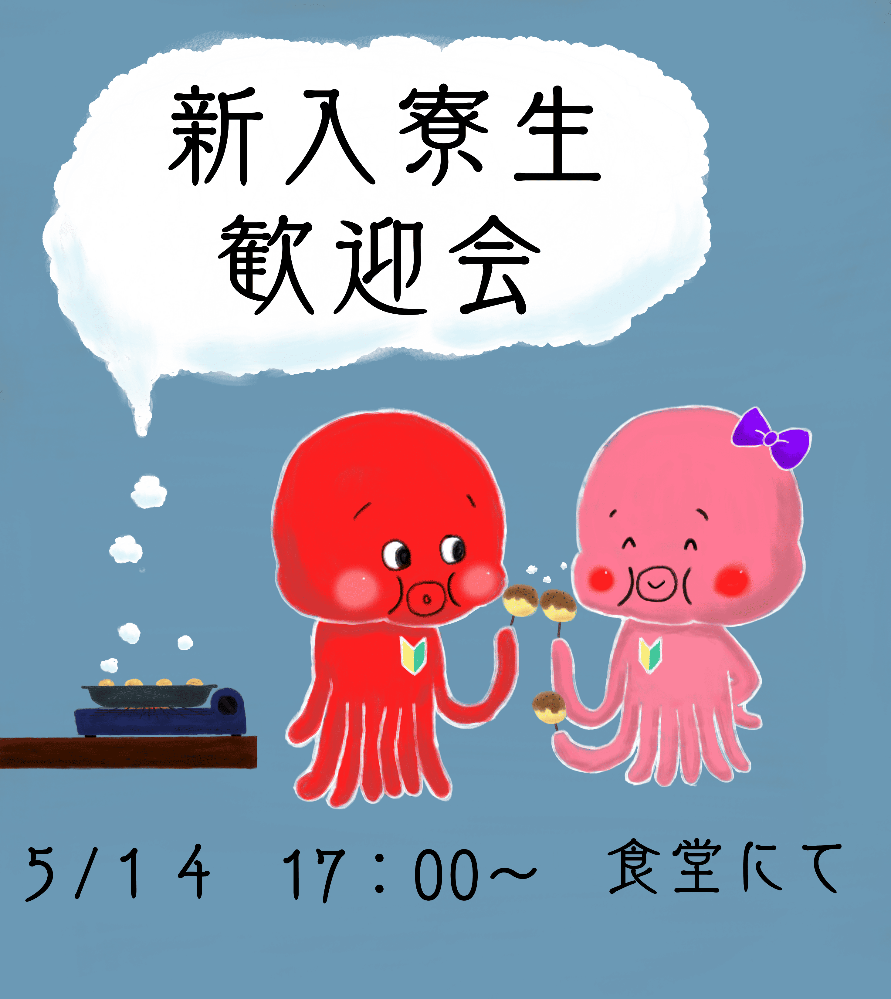
新入寮生歓迎会（たこ焼きパーティ）
親元を離れて緊張している新入寮生が、最初の一歩を踏み出しやすくなるよう企画した歓迎会です。ただ食事をするだけでなく、同じテーブルのメンバーと自然に会話やツッコミが生まれるよう、一般知識から「寮のちょっとマニアックなクイズ」、さらには「告知ポスターをよく見ていないと気づかない問題」を協力型クイズとして仕掛け、笑顔と安心感のあるスタートを作りました。
また、開催までの日数を毎日異なるカウントダウンイラストで飾ってワクワク感を演出する試みは、のちに高く評価され、東京（武蔵野美術大学寮など）を中心とした全国の多くの寮に導入されました。

夜の試写会
コロナ禍の制限が明け、みんなで集まれるようになったタイミングに合わせ、寮に新しく導入したプロジェクターの機材確認も兼ねて開催した試写会です。
告知ポスターでも「夜にひっそりと小規模で上映するワクワク感」を演出し、部屋からふらっと集まって同じ物語を共有する時間を作りました。

夏の映画上映会
春の試写会での反響を受け、サブウーファーの追加導入など音響や投影環境をさらにアップグレードして開催した夏のシアター企画です。長編映画3本をゆったり楽しめるよう美味しい食事も用意し、夏休みの寮に特別な非日常空間をプロデュースしました。
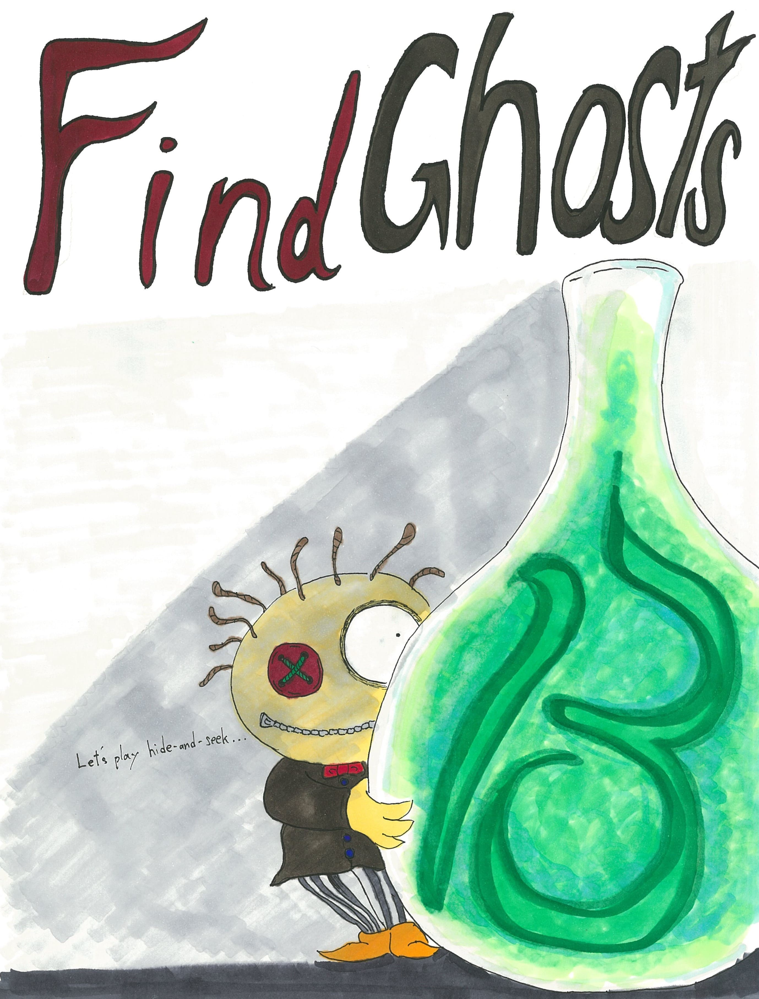
Finding Ghosts
大人数のパーティが少し苦手な人でも、自分のペースでこっそりイベントを楽しめるようにと考えたリアル探索ゲームです。
描き下ろした13匹のお化けイラストを寮のあちこちに隠し、日常の移動時間を「宝探し」に変える仕掛けを作りました。
すべて正確に見つけ出した人には、一人ひとり別のお化けを手描きした「1点もののイラスト＆メッセージカード」とプレゼントを贈りました。
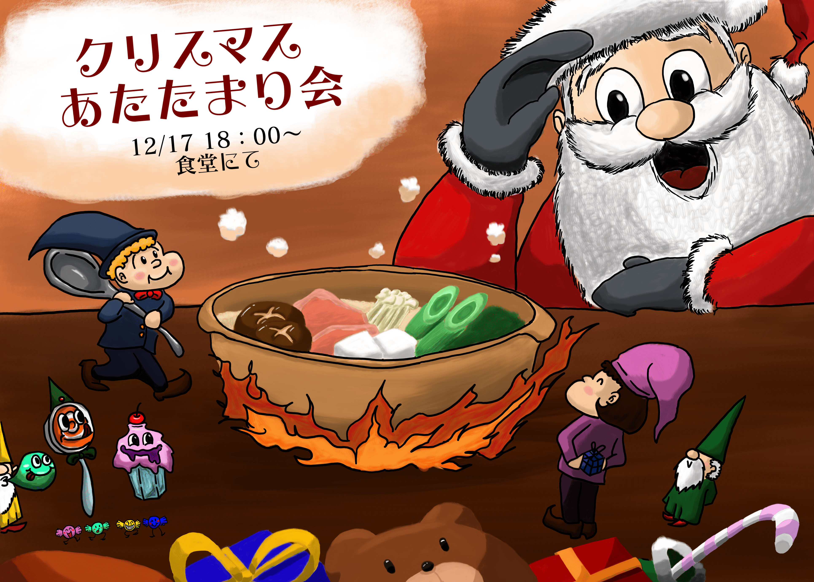
クリスマスあたたまり会（鍋パーティ）
寒さが厳しくなる12月に、温かい湯気を囲んで心も体もほぐれる場所を作りたいと企画した鍋パーティです。
ポスターにも温かみのあるユーモアを込め、1年の締めくくりにみんなで食卓を囲む賑やかな夜になりました。
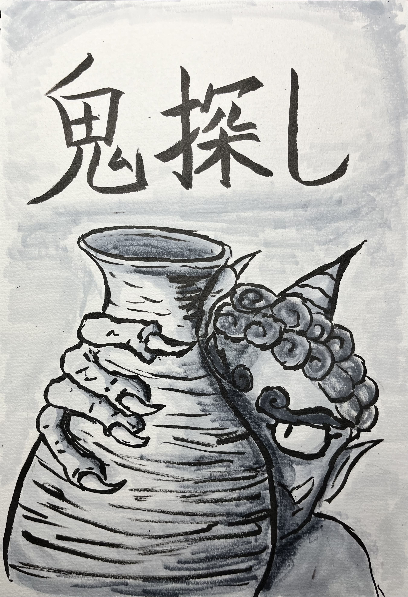
鬼探し
ハロウィンの「お化け探し」が好評だったことから生まれた探索シリーズ第2弾です。節分に合わせて個性豊かな10匹の鬼を描き下ろし、「どこに隠れているんだろう？」と寮生同士の会話が弾むきっかけを作りました。
ポスターと隠す鬼のイラストを「墨絵」モチーフにしたことで風景に溶け込みやすくなり、ハロウィンよりも少し歯ごたえのある難易度に仕立てています。
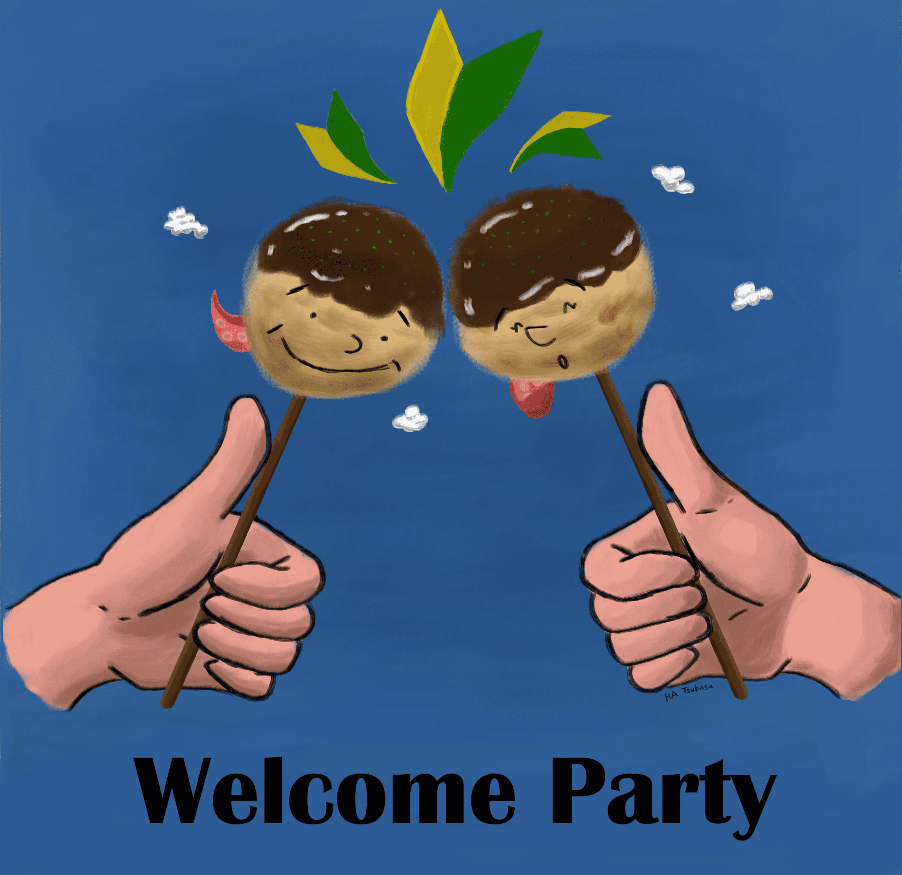
新入寮生歓迎会（たこ焼きパーティ＆広島案内クイズ）
2年目の歓迎会は、前年の内容をさらにアップデートして開催しました。既存のクイズに加え、初めて広島で一人暮らしを始める新入生が街に出るのが楽しくなるような「ご当地クイズや周辺のおすすめスポット案内」を盛り込み、新生活の不安をワクワクに変える工夫を凝らしました。
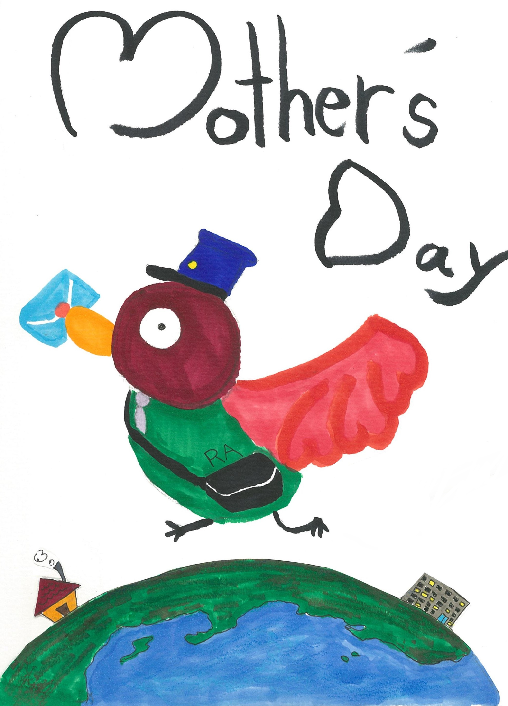
母の日イベント
いつもイベントを楽しんでくれる寮生だけでなく、「遠くで見守る親御さん」や「毎日を支えてくれる寮母さん」にも喜んでもらいたいと考案した企画です。普段は照れくさくて言えない感謝の言葉を手紙にし、お母さんへは郵送で、寮母さんへは直接手渡しで届ける温かい循環を作りました。
この企画は、前述のカウントダウン演出とともに全国のRAの中でユニークな取り組みとして紹介され、様々な寮に取り入れられました。
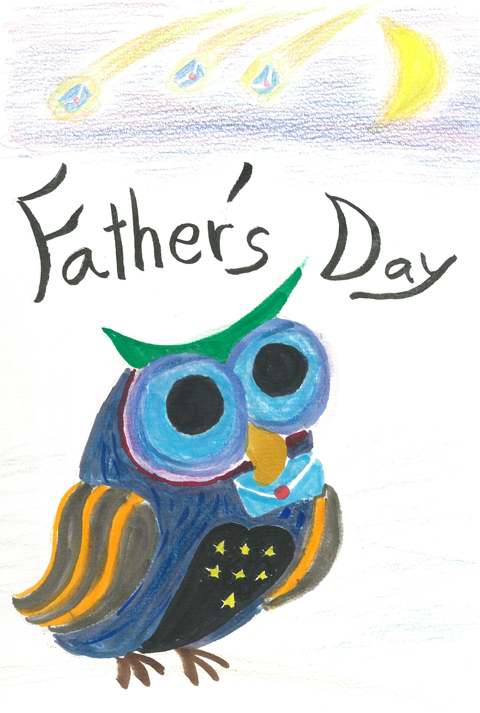
父の日イベント
母の日企画で生まれた温かい空気を引き継ぎ、6月はお父さんや寮長さんへ感謝の手紙を届ける企画を実施しました。
ポスターも母の日と対になるトーンで描き下ろし、寮の中と外を繋ぐ優しいコミュニケーションの場になりました。

夏の映画上映会
2年目の夏も、すっかり寮の定番となったナイトシアターを開館しました。お気に入りのポスターアートとともに、「夏といえばこの上映会」と寮生が自然に集まってくつろげる、夏の風物詩のような空間になりました。
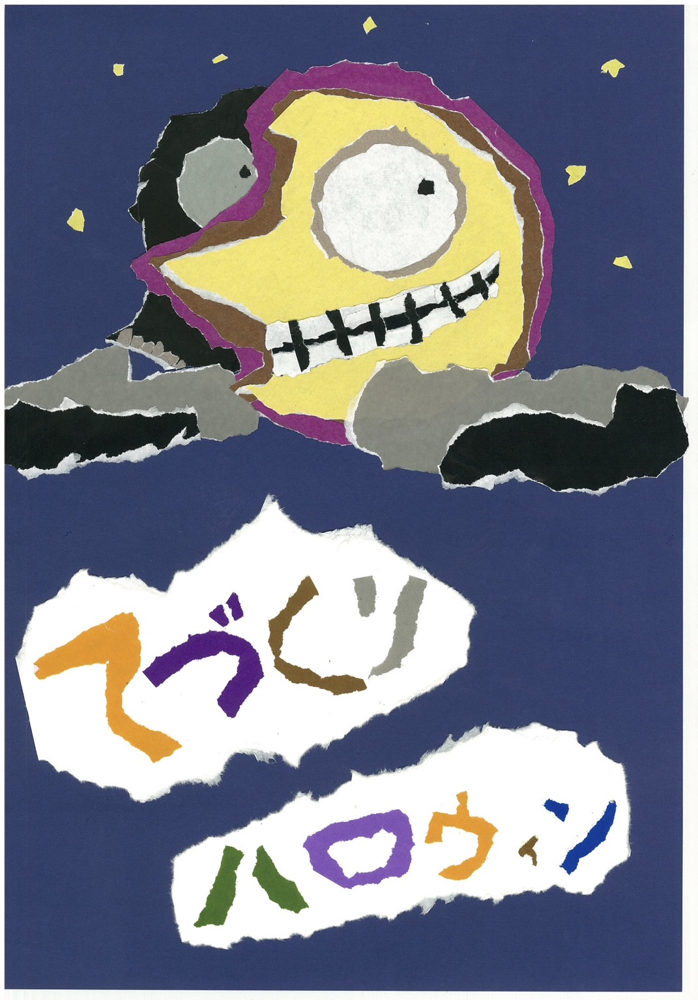
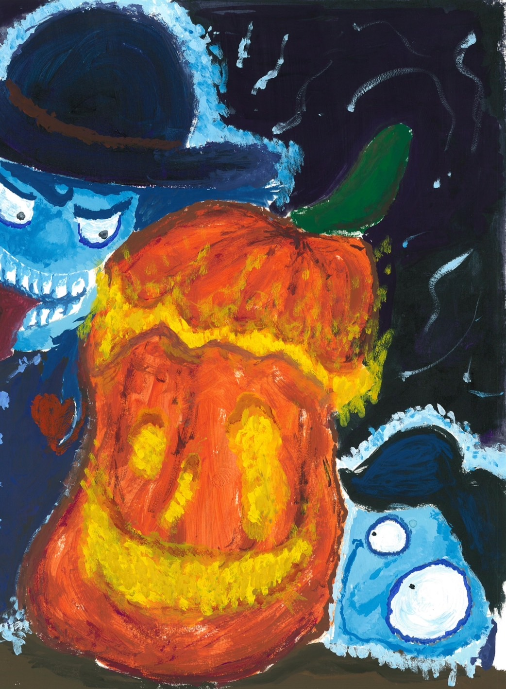

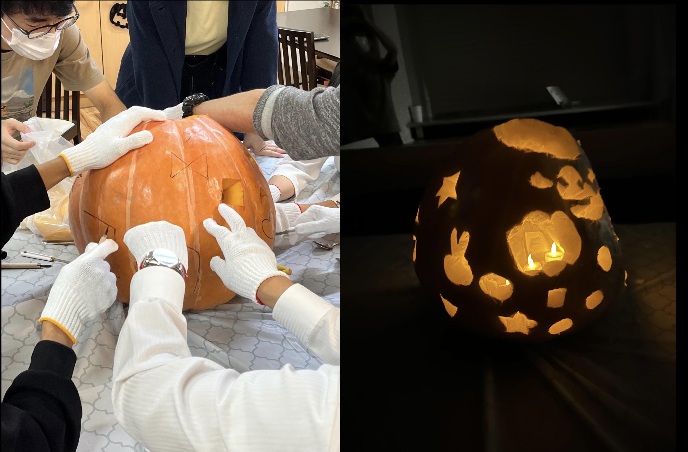
ハロウィン3大企画（Find Ghosts / てづくりハロウィン / Making-o'-Lantern）
2年目のハロウィンは本場海外の賑やかなハロウィン文化に着目し、「寮全体をひとつのハロウィンムードに染める」大型企画へと進化させました。
恒例の「13匹のお化け探し」に加え、粘土や折り紙での空間装飾、みんなで巨大なカボチャを作る「Making-o'-Lantern」を計3週にわたって展開し、「見る・探す・作る」のどこからでも参加できるイベントを設計しました。
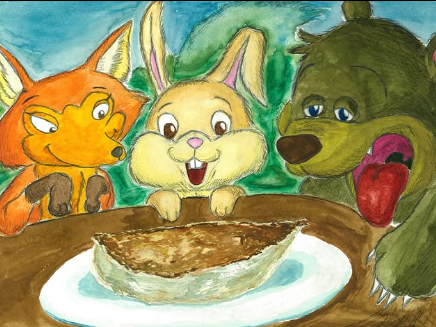
餃子パーティ
「一緒に手を動かす作業があると、自然と関わりが生まれる」という気づきから企画したクッキングイベントです。
みんなでタネを混ぜて皮に包み、ホットプレートで焼き上げるまでの共同作業を通じて、笑いが絶えない温かい食卓を作りました。
クリスマス映画上映会・鍋パーティ・プレゼント交換会
2年目のクリスマスは、海外の家庭のクリスマスレクリエーションを参考に、映画と鍋の団らんへ「ランダムプレゼント交換会」の仕掛けをプラスしました。
誰の手に渡るかわからない状態でプレゼントとメッセージカードを用意してもらい、開封する瞬間のドキドキ感とサプライズを演出しました。
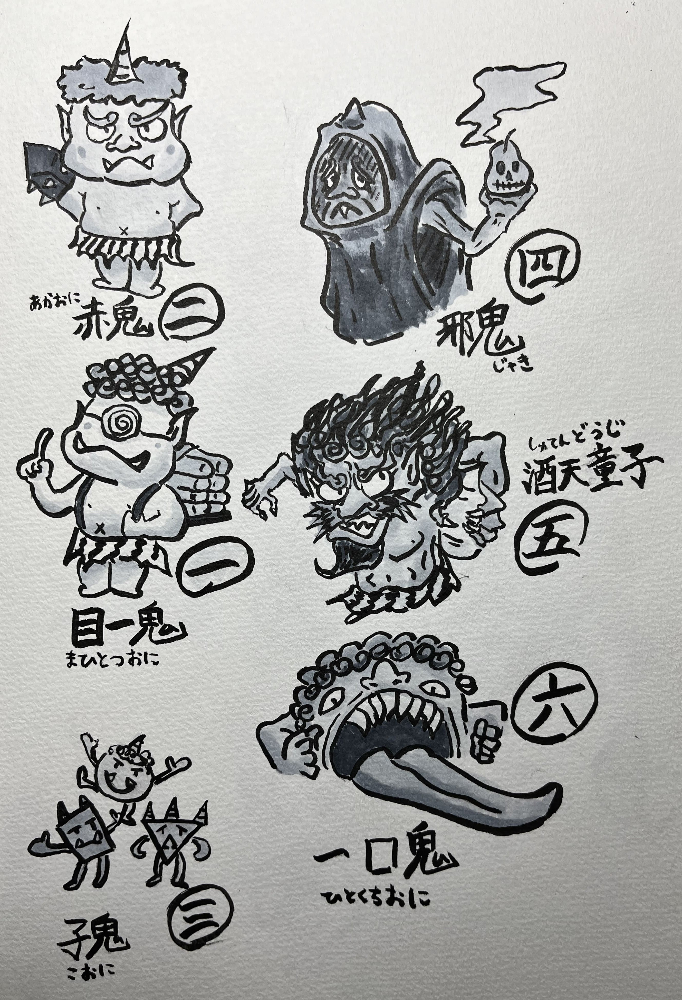
鬼探し
RAとして最後の企画となった、節分の寮内探索ゲームです。
2年間続けてきた探索シリーズも寮の恒例行事としてすっかり定着し、日常の空間に遊び心を忍ばせる楽しさを改めて実感した企画となりました。
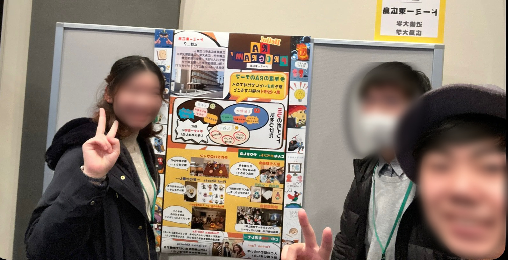
2024年度全国RAサミット（東京）にて発表・RA引退
仲間のRAメンバーによる生活サポートとともに歩んだ2年間の集大成として、全国のRAが集まる東京のサミットに登壇しました。
「寮を思い出づくりの場にする」ために続けてきたイベント企画と、描き下ろした約20点の告知ポスターについて発表を行い、RAの活動を締めくくりました。
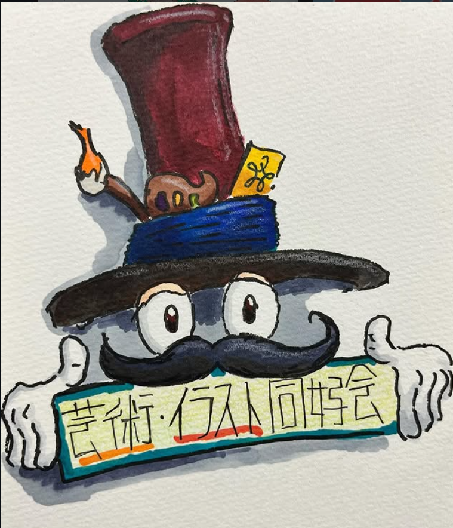
「芸術・イラスト同好会」設立・初代主将に就任
寮生がふとこぼした「絵を描きたいけれど、大学に芸術系の部活がなくて寂しい。絵で何か活躍したい」という一言がすべての始まりでした。
過去に芸術部・イラスト部・漫画研究部などが乱立し、人数分散で廃部になった経緯を踏まえ、絵画・イラストからデジタル作品まで「表現したい人が誰でも集まれる場所」として同好会を立ち上げ、大学公認を獲得しました。

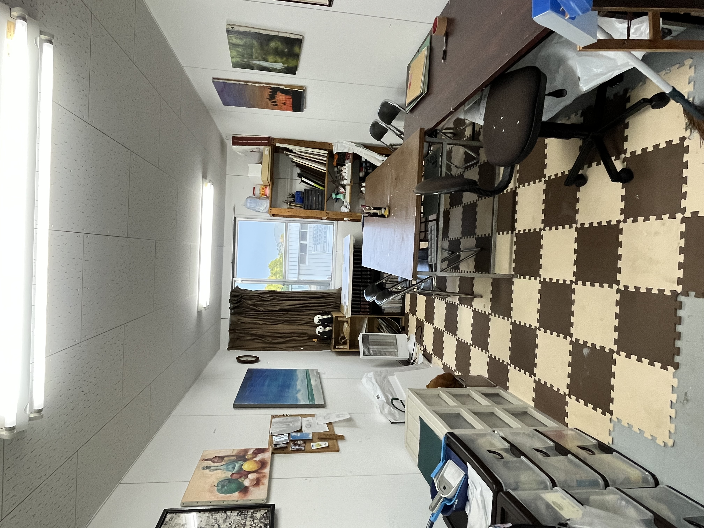
廃部室の一斉清掃
同好会のスタートは、約10年間使われずに眠っていた旧部室の大掃除から始まりました。廃部以来のゴミやホコリでいっぱいだった部屋を初期メンバーと汗を流して一斉に片付け、誰もが自由に画材を広げて創作に没頭できる、新しいアトリエへと再生させました。
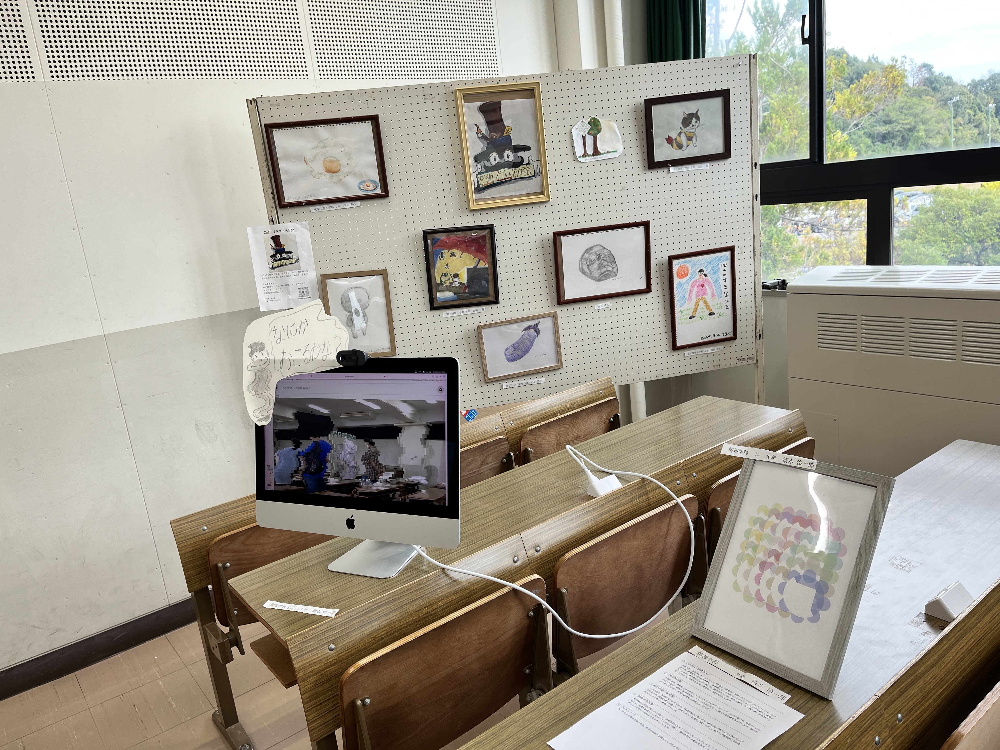
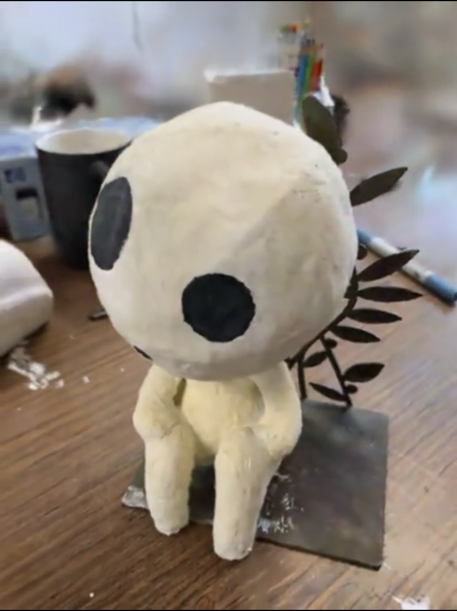
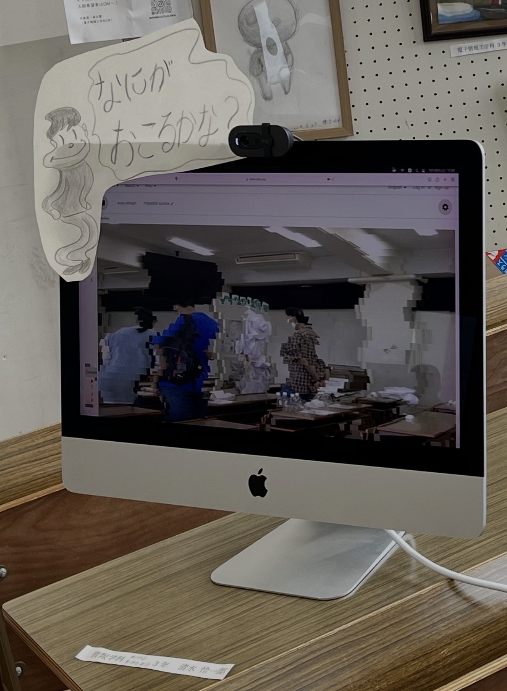
大学祭 作品展示
設立から4ヶ月で迎えた初めての大学祭展示です。
水彩画や鉛筆画、粘土といったアナログ作品から、プログラミングによって映像が不思議に歪む「スリットスキャンカメラ」まで、ジャンルの垣根を超えた作品を並べ、
「芸術を見るだけでなく体験するギャラリー」を作り上げました。
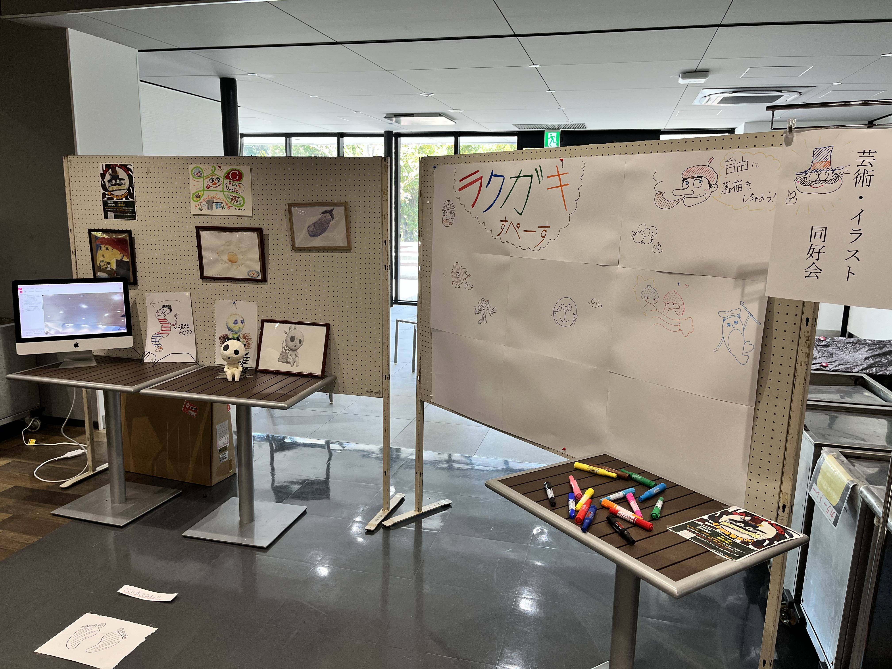
新入生歓迎会（体験展示＆落書きスペース）
2年目の春は、来場者自身にも「作品を作る体験」をしてもらう仕掛けとして、会場に黒板サイズの巨大な「落書きスペース」を設置しました。
訪れた新入生が自由にペンを取って描き込める参加型の空間にしたことで、「見る・体験する・作る」の3軸が完成し、同好会の輪がさらに大きく広がりました。
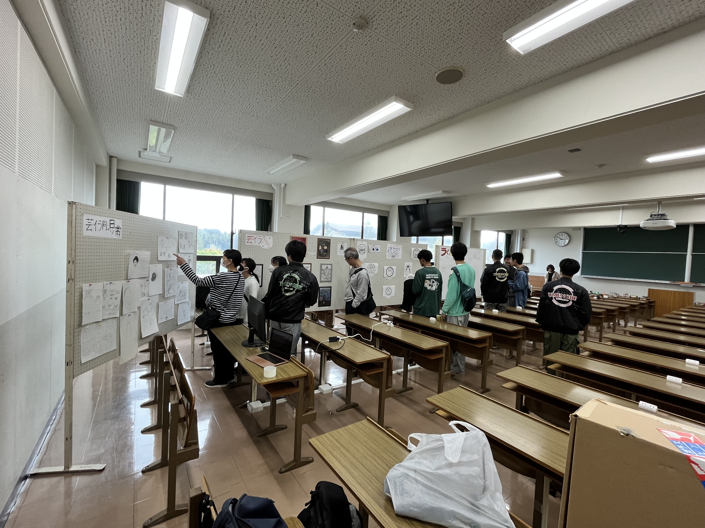
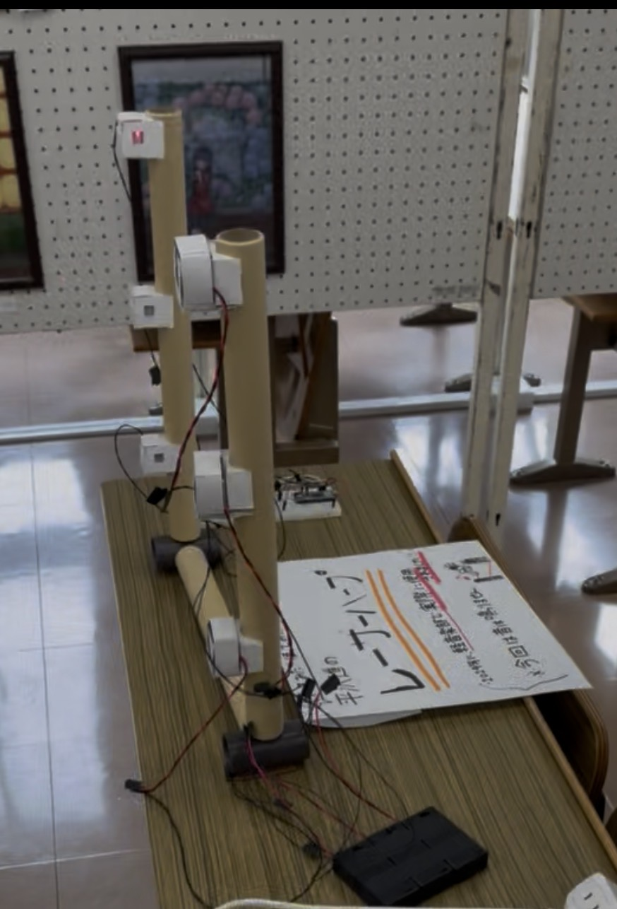
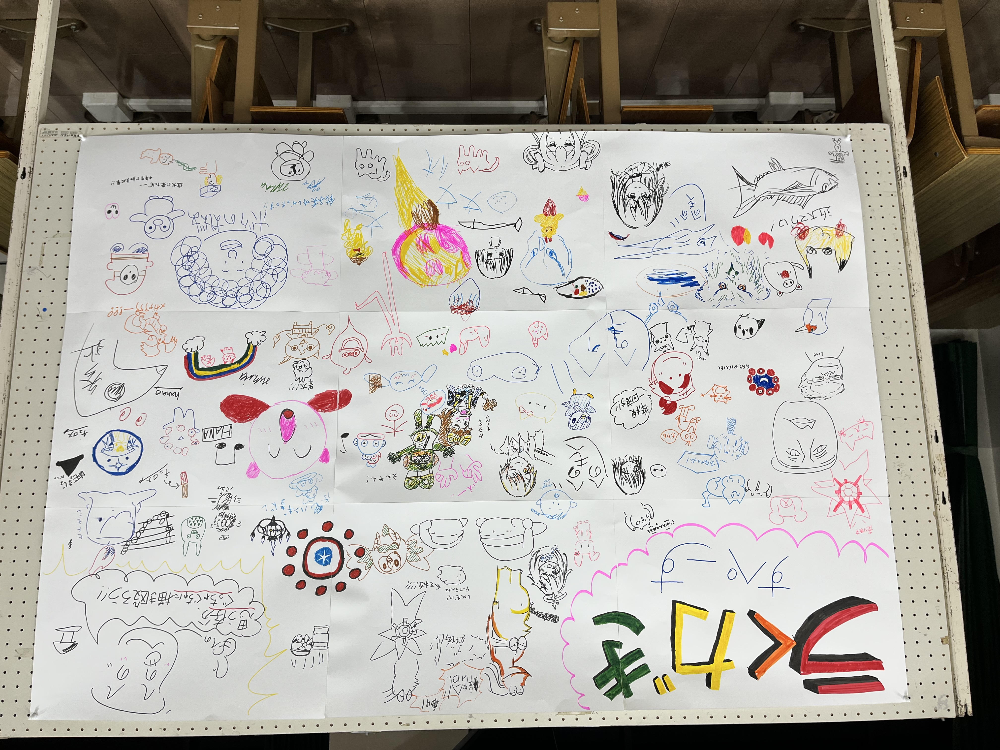
大学祭 展示 ＆ 主将引退
2度目の大学祭展示です。
イラスト展示や巨大落書き壁、スリットスキャンカメラといった
「見る・体験する・作る」の軸に加え、部員が制作した「レーザーハープ（平沢進モチーフ）」やコンテスト応募作品など、多様な才能がぶつかり合う空間となり、この展示をもって初代主将のバトンを後輩へ託しました。
京都工芸繊維大学大学院 入学
＆ Kyoto Design Lab techメンバー就任
さらなる表現とインターフェース設計の可能性を広げるため、京都工芸繊維大学大学院へ進学。あわせてKyoto Design Labのtechメンバーとなりました。

個人制作ゲーム『Chew! Blow! Poo!』公開
ポップなカートゥーン調の世界観の中に、「次々と迫るタスクとリスク管理のジレンマ」を詰め込んだ2Dアクションゲームを制作・公開しました。シンプルな操作ながら、焦れば焦るほどミスをしてしまう「愉快なパニック体験」を設計しています。
Gamesページで詳しく見る →

沖縄環境プロジェクト「So-smart Project」参加
国内外6大学が連携し、環境にやさしいスマート交通の実現を目指す国際共同プロジェクト「SO-SMART」に参加しました。
CO2排出量の少ない移動手段を選ぶとエコポイントが貯まり、アプリ内のキャラクター「シーサーちゃん」の表情が変化するゲーミフィケーション設計において、「どうすれば楽しみながら行動を変えてもらえるか」の企画議論や画面デザインの一部、沖縄現地での実証実験の調整に携わりました。

『UNTIL MOM COMES HOME — ママが帰るまで —』公開
手描きイラストとAI実写化を何層も塗り重ねた「ミルフィーユ手法」により、手描きの空気感を残したまま不気味なリアリティを追求した短編ブラウザホラーゲームです。
減り続けるバッテリーがプレイヤーの視線を「スマホ操作」へと注目させ、奥から迫るぬいぐるみを必然的に「視界の端」で捉えさせる視覚誘導を仕掛けました。
色彩で位置が簡単にバレないよう雷光のモノクロ表現に絞ることで、「視界の端でなんとなく近づく気配はわかるのに、はっきり見えた時にはもう目の前にいる」という焦燥感を生み出しています。
イラストも、空間の仕掛けも、ゲームも。見る人・遊ぶ人の心がふっと動く作品を、これからも制作していきます！